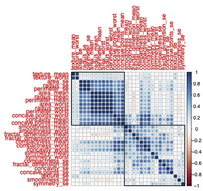
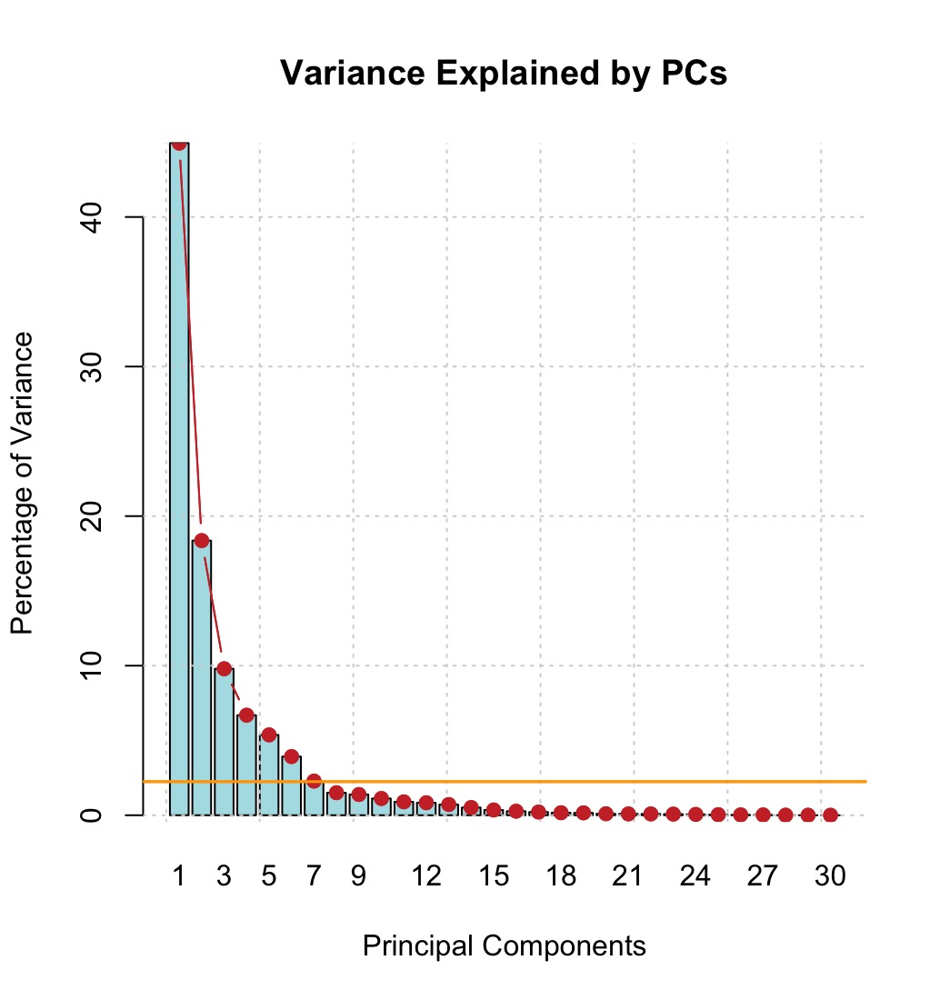
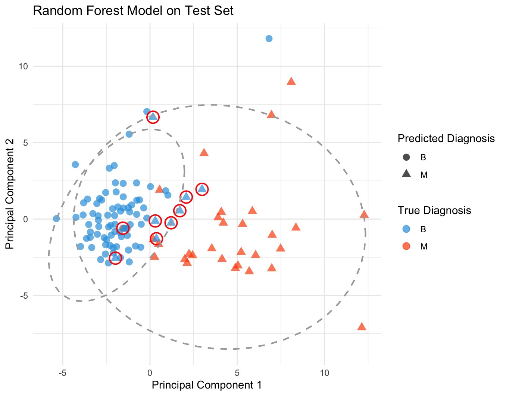
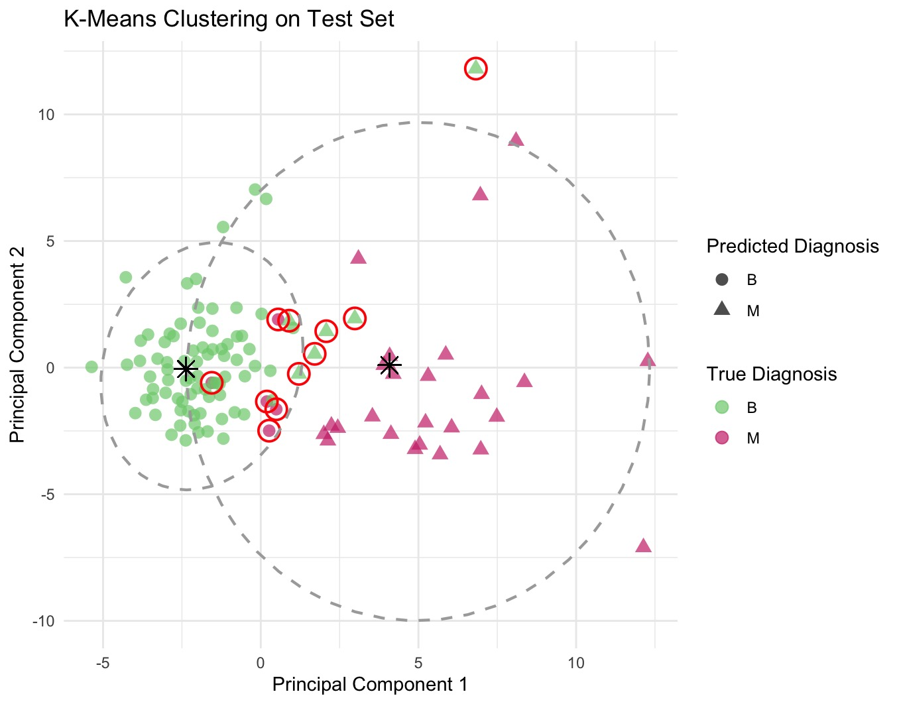

An Exploration of Supervised and Unsupervised Clustering
A comparison of Random Forest Classification against K-means Clustering for classification of breast cancer cells as benign or malignant. The below plot is the pairs plot of the first 11 variables in the data set to give a sense of the cell characteristics taken into consideration by the two models. Check out the Github Repository for a more in-depth look at the process!
Project Details / Background
For this project, I assessed the efficacy of two types of machine learning grouping algorithms for a dataset of breast cancer cell features. In this dataset, numerous features of cells were recorded along with their classification as either Benign 'B' or Malignant 'M'. The data showed large dimensionality and a significant degree of correlation. To address this, I applied a Principle Component Analysis, followed by a supervised Random Forest Classification model and an unsupervised K-means clustering analysis.
The data was partitioned into training and test datasets, which then had PCA applied to each of them. In some instances, PCA is applied for the purpose of dimension reduction, especially when dealing with computationally expensive methods like random forests. In this instance, the dataset is small enough that dimension reduction is not necessary, but the high correlation of variables within the data set does make a case for PCA. The random forest model produced a classification model with an accuracy of 92%, which is decent considering the relatively small size of the data set. The unsupervised learning method, k-means clustering, produced an accuracy of 91% when compared to the actual diagnoses, which is a great result for an unsupervised learning technique. Given below is a selection of the plots employed to visualise and assess these findings. For a more detailed selection, please check out the plots folder in the Github Repo.
Image Gallery

The above correlation plot highlights the high dimensionality and high degree of correlation observed in the data set.

This is the elbow plot used to determine the optimal number of principal components. The plot highlights the amount of variance explained by each additional PC. At 3 PCs, there appears to be an 'elbow' - a point at which further PCs start to explain less and less variation. The yellow line gives the point at which 95% of the variation is explained, which is given by 7 PCs.

This plot visualises the results of the random forest classification. The predicted diagnosis is coded by the shape of the point, while the true diagnosis is coded by the colour of the point. The ellipses circle the proposed groupings. Incorrectly classified points are circled in red. As can be seen in the plot, the model has a greater tendency to misclassify benign cells as malignant than the other way around. The random forest model misclassified 9 cells, most commonly the cells with PC1 and PC2 values which put them on the border between the primary groupings.

This plot visualises the results of the k-means clustering on the test data. The predicted cluster is coded by the shape of the point, while the true diagnosis is coded by the colour of the point. The ellipses circle the predicted clusters and the cluster mean is given by the black asterisk. Incorrectly classified points are circled in red. This plot was produced using the cluster means calculated from the training data and applying these to the test data as a means of checking the efficacy of the model. In this way, we can use a sort of supervised approach to validate our unsupervised model. Obviously, this kind of model check is only possible if the true groupings are known. The k-means cluster analysis only misclassified 11 cells in the test set, 2 more than the random forest. This is an impressive result considering the fact that it is an unsupervised learning process.